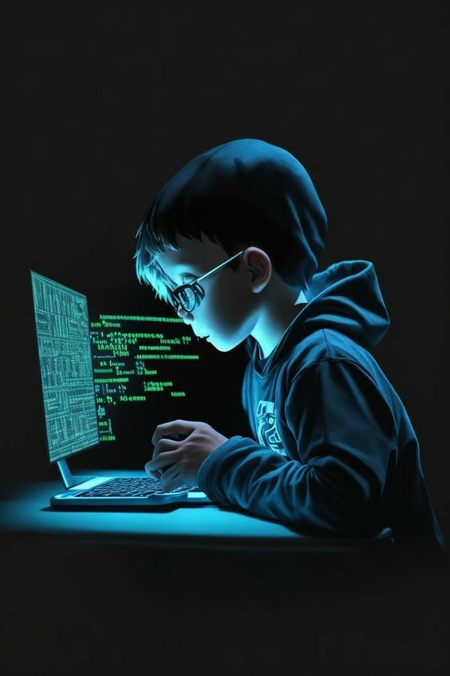

In this webpage i will discuss what we learn in ICT through whole semester.First of all in our first class
we discuss about computer and its characterstics. But my favourite part of this subject is lab and number system
and making algorithms and many other things i will discuss later.I thing this subject is amazing and necessary for
beginners to learn about technology and basics of computer and its memory organization. But it also depend on teacher
how they deliver the lectures.Maam Shafina taught us very well. Today i am able to make a webpages because of our
instructor,because they teach us everything from basics.I Will discuss about what i learn from this subject, later in
this webpage.
Random Video of html:
In this paragraph I will discuss whats the intresting about the ict class. Maam always gives meanningful assignments
and projects. I found excel assignment and the current ptoject of html is very good to improve our skills. After Html
i will about css and javascript to improve my skills in web-dev. For Web-dev it is very important to learn html first,
because in html we will learn about the basics of the web-dev. I will suggest our whole class to do their own research
to learn web-dev. Bcause there are ,many cheats available on internet. Web-dev is very vast everyday you learn a new thing
in web-dev. The more you practice the more your skills will be improve. So i will suggest do practice more and more to improve
your skills.
Random video Of html&CSS:
Learning HTML is of paramount importance in today's digital age as it serves as the foundation for creating
websites and web applications. HTML, which stands for Hypertext Markup Language, is the standard markup language
used to structure and format content on the World Wide Web. Understanding HTML enables individuals to build and
design web pages, control the layout and presentation of content, and incorporate multimedia elements such as
images, videos, and interactive features. Moreover, HTML is relatively easy to learn and serves as a gateway
to more advanced web development technologies such as CSS (Cascading Style Sheets) and JavaScript. Whether
you're a professional web developer, a student, or someone looking to enhance their digital literacy skills,.
mastering HTML is essential for effectively communicating and engaging with online audiences in today's
interconnected world.
Random video Of html&CSS:
Learning HTML and other programming languages is essential as it equips individuals with the skills needed to
create websites, develop software applications, and solve complex problems. HTML serves as the foundation for
web development, enabling individuals to design and build their own web pages and online projects.
Additionally, proficiency in programming languages such as Python, Java, and JavaScript opens doors to diverse
career opportunities in technology and beyond, while also fostering creativity, logical thinking, and
problem-solving skills that are valuable in both personal and professional contexts.
My Whatsapp profile picture:
